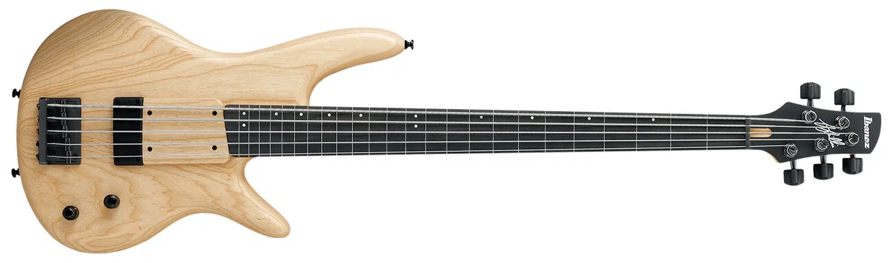
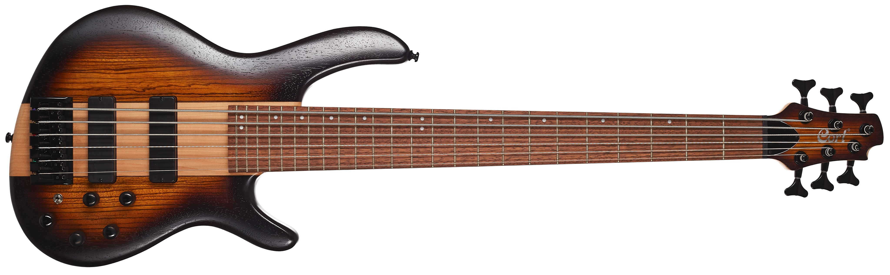
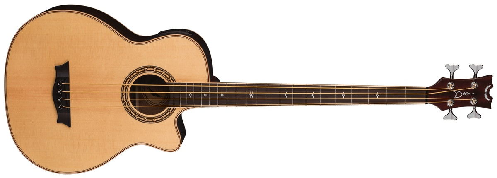

Для начала разберёмся в составляющих гитары, картинка ниже показывает все части акустической гитары.
Голова грифа – одна из важных частей гитары, на ней осуществляется крепление струн и настройка их натяжения с помощью колков (да, вот эти крутящиеся штуки), для правильного звучания гитары. Ближе к грифу стоит порожек, во-первых, для того, чтобы ограничить звучащую область струны, и во-вторых – чтобы отделить струны друг от друга на определенное расстояние и пресечь их смещение. Чем выше установлен порожек – тем выше струна поднимается над грифом. Если установить его слишком высоко, то инструмент не будет давать чистый тон из-за излишнего натяжения струн.
Гриф – самая важная и сложная часть гитары, на ней располагаются лады, а внутри находится анкер.
Анкер – это металлический стержень, который располагается внутри грифа гитары, обеспечивая его прочность, жесткость и некоторую упругость. С помощью его мы можем настроить жёсткость грифа, чтобы гитара давала чёткий зву без всяких дребезжаний и лишних звуков.
Лады – это такие железки, расположенные на длинной палке, которая идёт из корпуса(гриф), они разделяют все ноты на грифе, ставя пальцы между этими железками и играя какую-либо струну мы создаём ноту из одной из четырёх октав. В зависимости какой лад мы зажали и какую струну дёрнули будет звучать определённый звук.
Накладка грифа – это полоска дерева, которая крепится к верхней части грифа гитары. Она закрывает анкерный стержень и создает дополнительные резонансы, даёт сустейн и объемность звучания инструмента. Она может высыхать при неправильном хранинии гитары и вытеснять лады из своих мест, портя карчество звучания струн.
Благодаря корпусу и резонаторному отверстию (вот эта дырка по середине под струнами) мы собственно и слышим играемый звук намного громче.
Сам корпус состоит из верхней деки – верхняя видимая часть гитары, на который крепится бридж, обечайка – боковая сторона гитары, которой мы кладём себе гитару и задняя дека – задняя видимая часть гитары.
Некоторые производители клеят резиновую накладку под названием пикгард, по-сути она нужна для защиты покрытия верхней деки от игры медиатором. Не знаю кто этим пользуется, струны находятся достаточно высоко от деки чтобы задевать её медиатором.
Бридж – механизм на верхней деке гитары, который фиксирует струны с противоположной от колков стороны. На нём располагается нижний порожек, который часто подпиливают для регулировки высоты струн. Ну и чёрные (иногда белые) шпильки служат для закрепления струн на бридже.
1. Классическая гитара – самый первый вид именно гитар, которые мы привыкли видеть каждый день. Этот тип гитар отличается от примера с составляющими гитар своим креплением струн в голове грифа и на бридже. Когда на акустике из примера на бридже струны закрепляют шпильками, в то время на классике их нужно завязывать специальным узлом.
Так же на классической гитаре ставят нейлоновые струны, которые более долговечны и мягки по сравнению с железными на акустике и электрогитаре. Но из-за своей толщины сложнее зажимать аккорды
Наиболее распространённые породы древесины для изготовления корпуса классической гитары: палисандр или красное дерево для задней деки и обечаек, ель или кедр для верхней деки. Гриф может быть изготовлен из кедра или красного дерева (махагони).
Гриф гитары более широкий, что с одной стороны, позволяет легче прижать нужную ноту, а с другой стороны, требует бо́льших усилий при игре (например, для баррэ́).
Струны обычно перебирают пальцами. Часто гитаристы используют и ногти при игре, что позволяет достичь более яркого звучания. Однако на классической гитаре можно играть и медиатором, например, фламенко.
Метки ладов на грифе расположены сбоку, а не на плоскости грифа. Это больше соответствует строгому дизайну гитары. На дорогих инструментах метки ладов могут и вовсе отсутствовать. У классических гитар между головкой грифа и корпусом гитары расположено только 19 ладов, а не 20 и более, как у остальных.
Некоторые производители делают катавей (вырез) в конструкции гитары – это углубление в верхней части корпуса гитары, прилегающей к грифу. Оно предназначено для облегчения доступа к верхним ладам, чаще для тех, которые играют фингерстайл и соло в песнях.
Обычно классические гитары выбирают под свой рост или чтобы научиться играть. Ведь будучи взролым человеком с ростом +-180см Вы не будете брать малепусенькую гитару 1/8, она вам будет как укулелька, поэтому гитары стоит выбирать в музыкальных магазинах лично по своим ощущениям, а не эти супер-пупер наборы на маркетплейсах.
САМОЕ ВАЖНОЕ никогда не ставьте железные струны на классическую гитару ни в коем случае и ни при каких обстоятельствах, т.к. гриф и корпус классической гитары не рассчитаны выдерживать натяжение «металла». Внутри грифа классики нет анкерного стержня, который предусмотрен в инструментах с металлическими струнами!!!!!
На акустике стоят уже железные струны, с которыми есть уже некая морока, но об этом в разделе ухода за гитарой. Железные струны учитывая их нятжение сложнее зажимать, они менее долговечны и тп и тд. НО железные струны отличаются своим звучанием, из-за которого собственно их и выбирают.
У акустических гитар открывается более обширный выбор гитарных фирм и форм.
Так же здесь появляется разметка на грифе – точки
одна точка – на 3, 5, 7, 9, 15, 17 ладах
две точки
– только на 12 ладу
Производители премиальных гитар
делают отметки только 12 ладу и в виде всяких мини-рисунков, они
сделаны из слоновьей кости и впилены прям в накладку грифа, не неся
ей вред.
Не покупайте рисунки на накладку грифа, да, это красиво, но когда Вам придётся смазать гриф маслом придётся эти наклейки сдирать, что оставит след на накладке очень надолго. Оно того не стоит, ведь гитара и так выглядит круто. Я через это прошёл, и, надеюсь, Вы не повторите моей ошибки.
Так же как и с классикой – не стоит ставить нейлоновые струны на акустическую гитару т.к. вы не получите должного натяжения и энергии вибраций, которые заставят корпус резонировать, и акустика с нейлоновыми струнами будет звучать очень тихо и невыразительно.

Самый простой способ классифицировать формы корпуса – исходить из размера. Изначально все просто: маленький, средний, большой корпус. Плюс «уменьшенные» гитары, которые призваны выполнять компактные задачи и служить инструментами для детей.
Помните, общее правило гласит: гитары с меньшим размером корпуса имеют более контролируемое звучание с небольшой громкостью, а большие корпуса звучат громко, солидно и имеют тенденцию к преобладанию низких частот.
Сам играю на форме sfx, очень удобная, лёгкая, маленькая гитара, для фингерстайла пойдёт. Ненавижу дредноуты из-за большого корпуса, при игре приходиться сильно выпячивать руку на струны чтобы спокойно играть, так-же из-за габаритов очень неудобно транспортировать.
Но у дредноутов есть и плюсы, а это их громкость и дешёвая стоимость. Всё.
В качестве примеров различных форм корпусов и их звучания, я приведу в пример формы корпуса гитар Taylor.
Маленький корпус
Grand Concert (GC)
Самый маленький профиль гитар имеет компактные размеры, что делает игру на этом инструменте физиологически комфортной. Тонкая талия корпуса Grand Concert и небольшая глубина корпуса производят сбалансированный звук по всему тембральному спектру с хорошей читаемостью каждой ноты, что очень ценится гитаристами в стиле фингерстайл, сессионными музыкантами и музыкантами, выступающими на сцене. Маленький корпус также означает, что гитара не будет занимать очень много места в миксе среди других инструментов.
Средний корпус
Grand Auditorium (GA)

Самая популярная и универсальная форма корпуса гитары. Следующий размер после Grand Concert, он обладает теми же базовыми размерами, что и Dreadnought (традиционная форма гитары), но с более зауженной талией, что позволяет гитаре более комфортно лежать на вашем колене. Тембрально гитара находится между Dreadnought, знаменитой хорошей отдачей от игры медиатором и аккордами и Grand Concert, которая разрабатывалась для музыкантов с техникой фингерстайл. Она сочетает в себе все лучшее из обоих миров. GA имеет хорошие средние частоты, что помогает поддерживать баланс и чистоту звучания, а также достаточное количество высоких и низких частот для отработки атаки медиатором средней силы.
Это разумный выбор для музыкантов, которые играют в разных музыкальных жанрах. Если вы новичок, не определившийся со своим стилем музыки или универсал, желающий обладать гитарой, актуальной в разных жанрах, приобретение гитар по типу Grand Auditorium не станет для вас ошибкой.
Большой корпус
Grand Orchestra (GO)
GO – это самая большая, мощно и насыщенно звучащая форма корпуса гитары. Но что удивительно в сравнении с другими гитарами, то что она сбалансирована от верха до низа – даже высокие ноты звучат богато и мощно. Она отзывается даже на легкие прикосновения, вознаграждая музыкантов с динамичным стилем игры.
Музыканты, играющие медиатором, полюбят глубокие и мощные низкие частоты, а также яркие верха. Солирующие музыканты будут рады богатой палитрой звуков и текстур. Если вы планируете играть медиатором мощные открытые ковбойские аккорды или исполнять аккомпанемент пальцевой техникой, Grand Orchestra будет экспрессивным и многогранным инструментом в ваших руках.
По составу, от обычной гитары отличается почти всем, здесь другой корпус, голова грифа, сам гриф и т.п., но обо всём по порядку.
Голова грифа на электрухе может быть как и акустике, так и узким, где колки расположеныв ряд(фото), расположение колков ни на что не влияет, это просто выбор производителя, так скажем – для красоты
Здесь намнго тоньше и уже гриф в сравнении с акустикой и классикой. Разница ширины грифа связана с тем, что нейлоновая струна слабее натянута по сравнению с металлической, поэтому она колеблется влево-вправо сильнее.Требуется больше свободного места между струнами, чтобы они не задевали друг друга. А на электрухе же, наоборот – без подключения из-за особенности корпуса она играет оочень тихо, и производители этих гитар пренебрегали живым звучанием, т.к. электрогитара создана только на звучание с электронными эффектами.
Корпус – здесь он имеет намного и намного больше разнообразия по сравнению со всеми видами струнных инструментов. В электрогитаре корпус не полый изнутри, как в классике и акустике, а состоит из цельного куска дерева, что придаёт большой вес данному типу гитар.
Так же здесь мы встречаемся с новым понятием звукосниматели - устройство, преобразующее колебания струн в электрический ток.
Различают на гитаре 2 вида звукоснимателей:
Позиционный переключатель звукоснимателей – дают возможность в гитаре переключаться между звукоснимателями, а также комбинировать их звучание.
Регулятор громкости – нужен для настройки громкости звучания электрогитары.
Регулятор тембра – позволяет отсекать определенные частоты (как правило, высокие) от общего сигнала. Например, если у вас установлен регулятор на максимум, то вы получаете полный спектр частот, что может сделать звук довольно ярким, особенно на бриджевом звукоснимателе и даже резким. Поворот регулятора на меньший уровень убирает некоторые верхние частоты, чтобы звук стал более приятным для слуха.
Вход для шнура – это разъём для подключения кабелем(джеком) электрогитары к комбоучилителю или звуковой аудиокарте.
Бридж здесь немного другой, Существует несколько видов бриджей на электрогитаре:
Выбор электрогитар тут просто огромный, на любую форму и цвет. Но выбирать надо с умом, учитывая Ваш стиль игры. Например если вы играете простые песни, то конечно Вам не подойдёт металл-гитары.
Все берут шедевростраты с вб или озона по вкусной цене, чего я не советую, ведь там о качестве и говорить не стоит. Если есть желание этим серьёзно увлекаться, то лучше потратиться на гитару и не плакать с дровами.
4. Бас-гитара – это та же самая электрогитара, только у неё 4 толстенных струны. И играют на ней только басовые ноты.
Бас создает ощущение заполненности в музыке и фундамента, на котором строится всё остальное. В роке и подобных стилях помогает создать "groove", или ритмический рисунок. Он как бы связывает ударные и другие инструменты в группе, т. е. ритм и мелодию. Чаще используется для аккомпанемента, чем в качестве солирующего инструмента.

5-струнная бас-гитара имеет дополнительную низкую струну Си. По сравнению с 4-струнным такой бас имеет более широкий гриф и более узкое расстояние между струнами. Становится сложнее играть. Зато дополнительная струна дает быстрый доступ к низким нотам без смены позиции левой руки, что очень удобно. Также 5-струнную гитару ценят музыканты, играющие в «тяжелых» стилях музыки.

6-струнная бас-гитара помимо дополнительной низкой Си имеет еще и высокую шестую струну До, которая позволяет играть высокие партии и даже соло. Из недостатков стоит отметить еще более узкое расстояние между струнами, поэтому, к примеру, для игры слэпом нужно гораздо больше практики и терпения.

Электроакустическая бас-гитара – это обычный акустический инструмент с пьезодатчиком, усиливающим сигнал. Чаще всего пьезодатчик установлен под бриджем и оснащен предусилителем, позволяющим управлять тембром звучания, когда инструмент подключен. Такой инструмент подойдет для легкой акустической музыки.